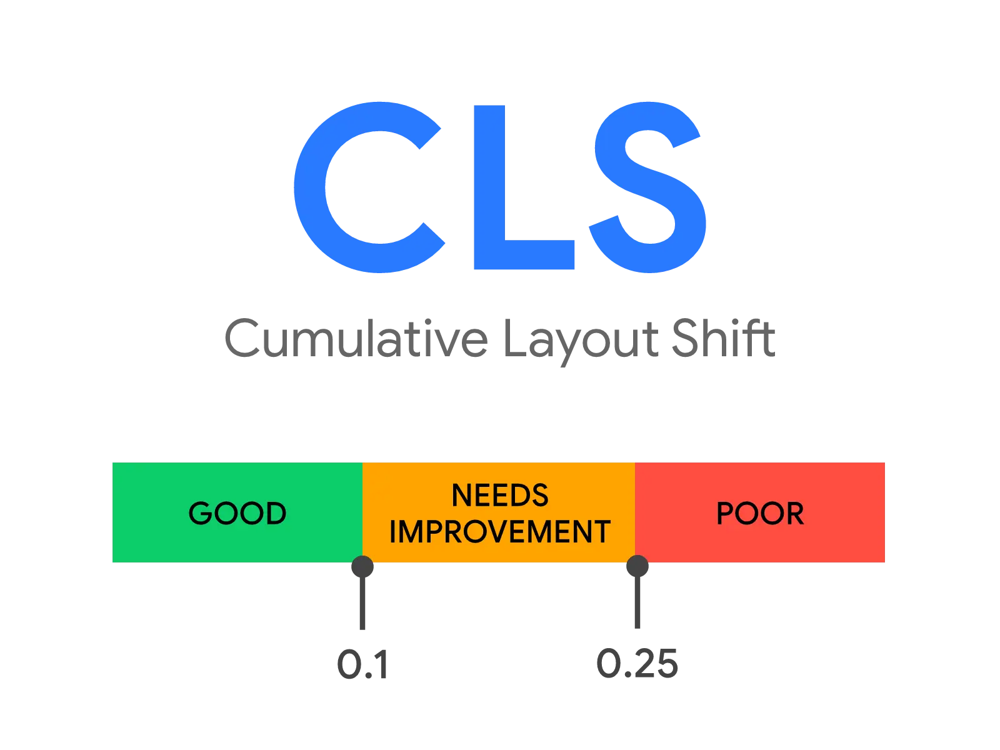

短答
累积布局偏移量的是内容开始绘制之后，可见区域发生了多少意外移动。
访客自己点开手风琴而引起的移动，和一条横幅自己插到产品名上方，不是同一类事。SEO 健康可以记下模板上的意外移动。它不给需求覆盖打分，也不代表 GEO。
定义
累积布局偏移简写为 CLS，把一次页面浏览期间视口里的布局移动加总。公开说明里，它把受影响的视口比例和元素移动的距离放在一起看。迟迟加载、又没有预留位置的 cookie 条把规格表往下推，是一次具体的偏移。字体替换导致标题换行，是另一种。本页的图展示用来谈论这个总和的公开区间。区间是定义的标签，不是对 Mika、某位客户或本营销站的测量。
B2B 模板上常见的移动来源
工业站点上常见的推动者是没有预留空间的图片、改变换行的网页字体，以及事后插入的同意条或聊天条。偏移是布局事件，不是文案问题。给主视觉保留宽高，给同意区域一个稳定位置，规格表就会留在 HTML 原来放它的地方。健康记录写出模板和一条样例 URL。它不声称页面会被引用。

要检查什么
- 图片和嵌入是否缺少宽高或宽高比占位
- 字体是否在首次绘制后替换并改变换行
- 是否有条或横幅插到已经可见的内容上方
- 移动是否发生在访客自己的点击之后
- 模板名旁边是否有一条样例 URL
一个结构示例
阀门产品页先画出标题，然后聊天组件掉进首屏，数据表链接跟着跳走。访客并没有打开任何东西。健康发现是组件的位置，不是缺一个市场页。改位置是模板工作。以后增加语言是另一条轨道。
它不声称什么
更稳定的布局不保证排名或引用。Mika 不保证 Core Web Vitals 的结果，清掉一条布局警告也不保证索引。
Mika Visibility 把它归到哪里
Mika Visibility 把布局稳定性归在 SEO 健康：线上页面的技术就绪。SEO 增长仍然问哪些意图还没覆盖。GEO 健康仍然问买家能否找到可支持的答案。这些保持独立。没有一个混合总分会把稳定布局变成增长结果。
常见问题
累积布局偏移量的是什么？
累积布局偏移量的是内容开始绘制之后，可见区域发生了多少意外移动。
区间图是本站的分数吗？
区间是定义的标签，不是对 Mika、某位客户或本营销站的测量。
修好布局偏移就能保证排名吗？
更稳定的布局不保证排名或引用。
下一步
做一次结构化的 SEO + GEO 审计，查看健康发现、增长缺口和可以执行的蓝图。
更清晰的实体、答案、证据和上下文，会让页面更容易被理解与引用。任何回答产品中的结果都不作保证。